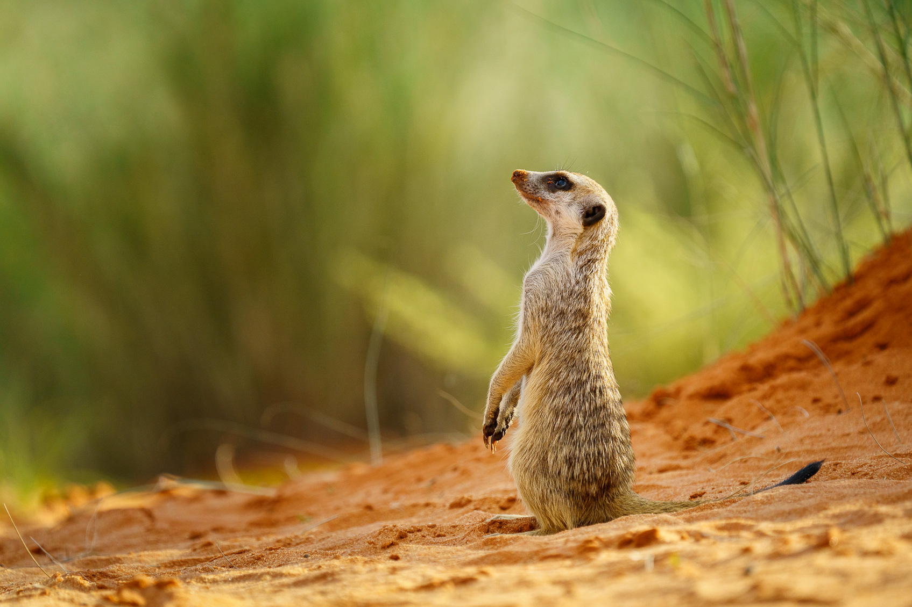
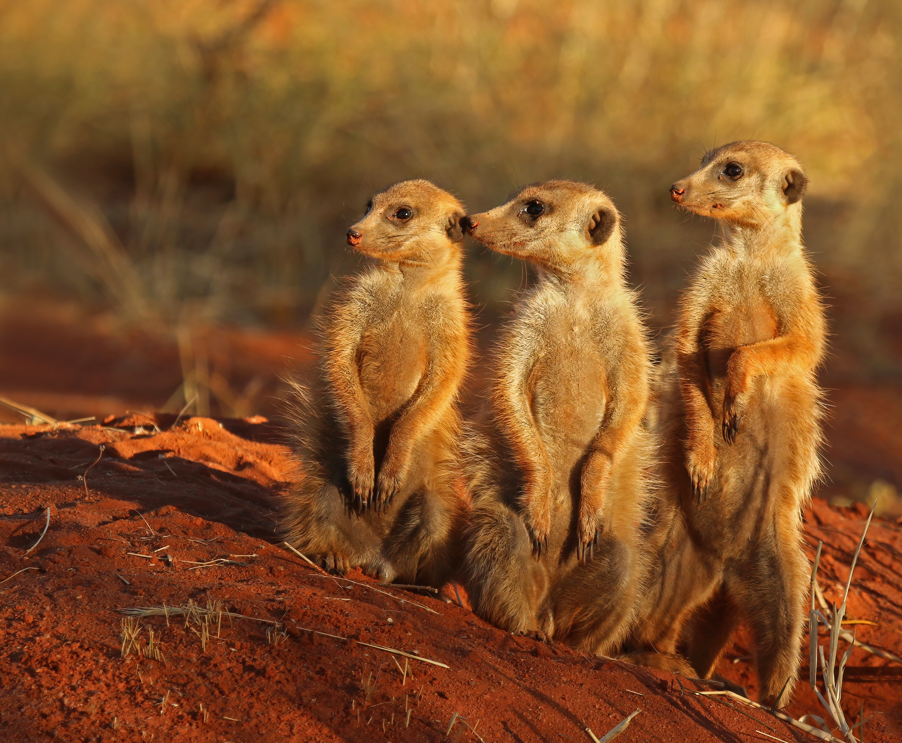
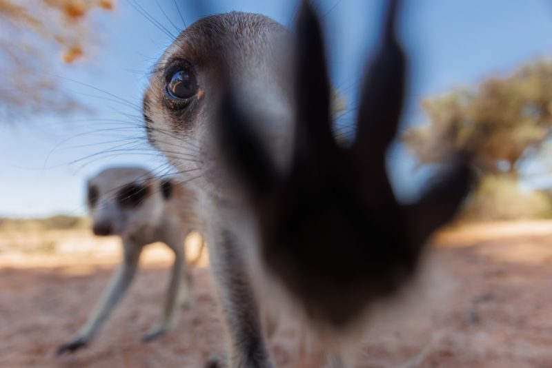
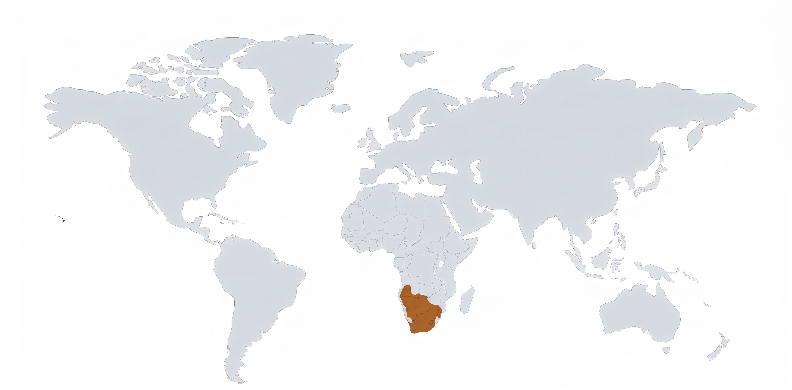

Suricata
O suricata (Suricata suricatta) é um pequeno e fascinante mamífero pertencente à família dos mangustos, destacando-se pela sua natureza extremamente sociável e comportamento cooperativo. Conhecido pela sua icónica postura ereta, este ágil animal simboliza a resiliência nas áridas savanas e desertos do sul de África. Apesar do seu tamanho reduzido, é uma espécie incrivelmente engenhosa, capaz de construir redes complexas de túneis subterrâneos e de trabalhar em equipa para garantir a proteção e o sustento de toda a colónia.
Habitat Natural

O suricata habita predominantemente planícies áridas, savanas abertas e zonas semidesérticas, como o deserto do Kalahari, onde a terra seca facilita a escavação. Estes animais constroem ou aproveitam vastos sistemas de tocas subterrâneas com múltiplas entradas, que lhes oferecem abrigo seguro contra predadores e temperaturas extremas. Durante o dia, exploram ativamente as imediações da toca em busca de alimento, mantendo sempre o seu território perfeitamente vigiado.
Dieta
O suricata é um animal com uma dieta baseada maioritariamente em insetos, mas com grande flexibilidade. A base da sua alimentação é composta por insetos, aranhas, centopeias e escorpiões. Para complementar, consomem pequenos répteis, ovos, raízes e tubérculos. Esta dieta diversificada e rica em humidade é crucial, pois permite-lhes obter grande parte da água de que necessitam para sobreviver no seu ambiente árido e seco.
Curiosidades
- As manchas escuras à volta dos olhos funcionam como uns "óculos de sol" naturais, reduzindo o brilho do sol e ajudando-os a detetar predadores aéreos.
- Possuem um sistema de vigia rotativo: enquanto o grupo procura alimento, um "sentinela" ergue-se nas patas traseiras num ponto alto para alertar a colónia contra perigos.
- Têm uma imunidade surpreendente ao veneno de várias espécies de escorpiões e cobras venenosas, que frequentemente fazem parte do seu menu diário.
Os nossos suricatas
No Zoo Jonçela, um animado clã de cinco suricatas, liderado pela fêmea alfa Tiomax e pelo macho Feliciano, traz vida e constante movimento ao recinto. Com idades entre os 2 e os 5 anos, os membros do grupo pesam em média cerca de 800 gramas cada e medem perto de 30 centímetros de comprimento. Partilham um recinto desenhado ao detalhe com areia apropriada para escavações e rochas altas, onde demonstram diariamente a sua forte organização social e o seu infalível instinto de vigilância.